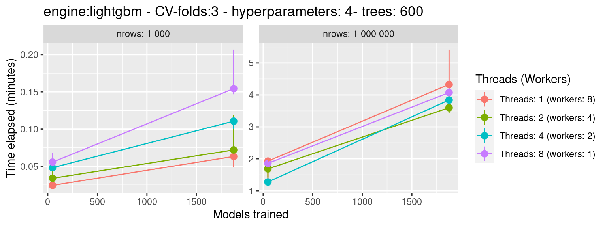

vignettes/threading-forking-benchmark.Rmd
threading-forking-benchmark.Rmd
workers*threads = 8)# main function to tune_grid with given benchmark parameters execute_tune_grid <- function(df, threads, workers, cv_folds, tune_grid, engine = "lightgbm") { ############################################################## df_splits <- vfold_cv(df, v = cv_folds) df_rec <- recipe(mpg ~ ., data = df) df_model <- boost_tree( mtry = 3, trees = 600, sample_size = 0.7, min_n = tune(), tree_depth = tune(), learn_rate = tune(), loss_reduction = tune() ) %>% set_mode("regression") %>% set_engine(as.character(engine), nthread = threads) df_wf <- workflow() %>% add_model(df_model) %>% add_recipe(df_rec) ############################################################## doParallel::registerDoParallel(workers) tg <- tune_grid(df_wf, df_splits, grid = tune_grid) tg } # parameters parameters <- expand.grid( engine = "lightgbm", cv_folds = 3, tune_grid = c(2, 5), nrow = c(1e3, 1e6), threads = c(1, 2, 4, 8) ) %>% mutate( workers = 8 %/% threads ) # bench::mark set.seed(1) bm <- bench::press( { Sys.sleep(3) df <- mtcars %>% sample_n(nrow, replace = TRUE) bench::mark( execute_tune_grid(df, threads, workers, cv_folds, tune_grid, engine), check = FALSE, iterations = 3, memory = FALSE, filter_gc = FALSE, time_unit = "m" ) }, .grid = parameters )